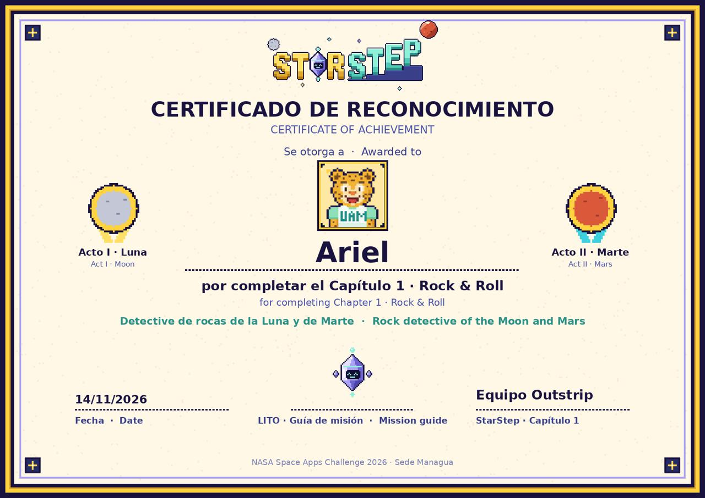

🌕 LUNA14/11/2026
El polvo lunar es pegajosoAprendí que el polvo de la Luna puede cubrir los paneles solares como una capa gris.
Aprendí que el polvo de la Luna puede cubrir los paneles solares como una capa gris.
LITO me dio la bienvenida. Hoy empieza mi misión hacia la Luna.
En StarStep, las insignias se ganan al realizar descubrimientos reales durante las misiones.
Iniciaste tu viaje espacial junto a LITO desde la Tierra.
